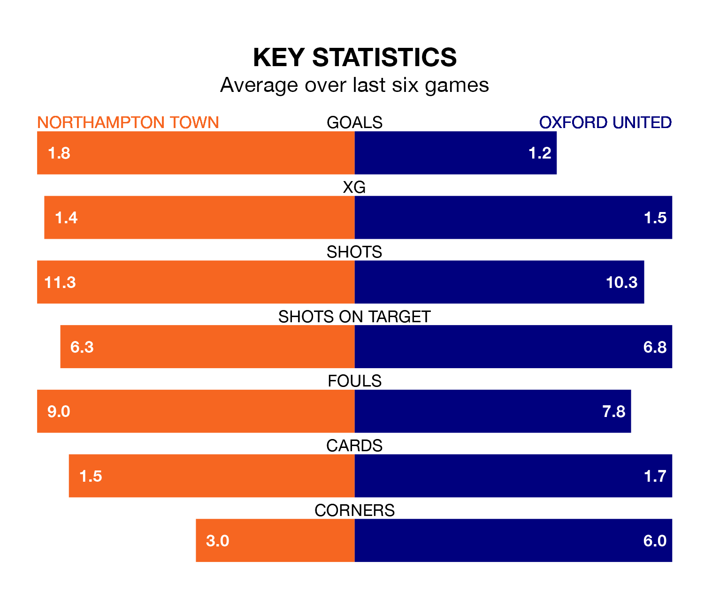

Oxford United travel to Northampton Town on Saturday in EFL League One.
The visitors come into the game on the back of a win in their last match, having beaten Burton Albion 3-0 at home, with two goals from Rúben da Rocha Rodrigues and one from Marcus McGuane.
The Cobblers, meanwhile, drew their last match, 2-2 against Carlisle United, with their goals scored by Shaun McWilliams and Kieron Bowie.
Oxford are third in the table after 21 games, of which they have won 12 and drawn four, earning 40 points.
Northampton are 10 places behind United in 13th, with eight wins and three draws putting them on 27 points.
With 35 goals in 21 games so far this season, the Us are scoring more than average in the league with 1.7 goals per game. And they are conceding fewer than average, letting in 22 goals at a rate of 1.0 per game.
Town, meanwhile, are below average scorers, with 1.2 goals per game, compared to a league average of 1.3. They have conceded 1.3 goals per game.
In Sam Hoskins, the Cobblers have one of the league's sharpest shooters so far this season. He has notched 12 goals in 21 appearances, to sit fourth in the scoring charts.
His goal rate of one every 155 minutes is quicker than that of da Rocha Rodrigues, the away side's top scorer with a goal every 248 minutes, and a total of six goals in 19 games.
The hosts are in good form in EFL League One, with four wins and a draw from their last six games.
With two wins and two draws over that period, Oxford's form is worse – they have taken eight points from 18, compared to Northampton's 13.
Saturday's match will be refereed by Craig Hicks, who has taken charge of four EFL League One games so far this season, issuing two red cards and booking 11 players. He has not awarded any penalties.
He is yet to oversee a match featuring either Northampton or Oxford this season.
Updated: 12:43, 20/12/23